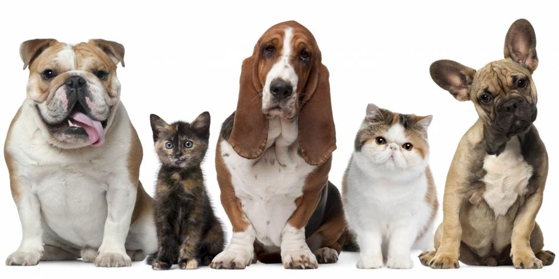

- 
-

-
Propósito del estudio
Objetivo general
Implementar un sistema para administrar todas las funciones de un albergue de mascotas mediante el uso de base de datos
Objetivos específicos
-Administrar a los animales del albergue
-Administrar al personal del albergue
-Administrar a las personas que adoptan a animales del albergue
-Administrar los activos del albergue
Método, medios e instrumentos de investigación que van a usarse (es decir cómo se llevara a cabo la investigación, justificación y alcances)
Para desarrollar el sistema del albergue utilizaremos la metodología de RUP ágil, complementándolo con el modelo esencial
Justificación
El sistema beneficiara al albergue para poder administrar a todos los animales, donadores, personas que adoptan, y personal del mismo albergue.
Con el sistema del albergue se podrá dar de manera más fácil los servicios básicos a los animales, como pueden ser alimentación, servicios veterinarios, etc.
Alcances
En el presente trabajo se desarrollara el sistema para la administración del albergue.
En sistema será únicamente para el albergue slinky que es un albergue de perros y gatos.